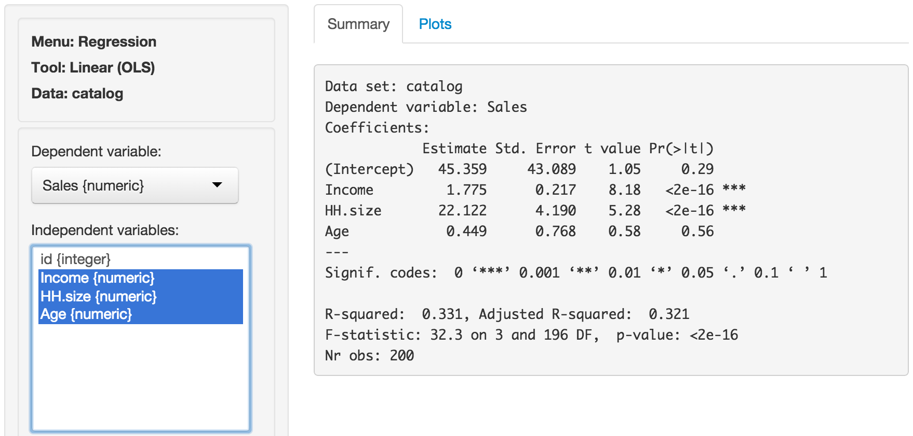

Regression > Linear (OLS)
(Linear) Regression: The workhorse of empirical research in the social sciences
All example files discussed below can be loaded from the Data > Manage page. Click the examples radio button and press Load examples.
Functionality
Start by selecting a dependent variable and one or more independents variables. If two or more Independent variables are included in the model we may want to investigate if any interactions are present. An interaction exists when the effect of an independent variable on the dependent variable is determined, at least partially, by the level of another independent variable. For example, the increase in price for a 1 versus a 2 carrot diamond may depend on the clarity level of the diamond.
The Predict box allows you calculate predicted values from a regression model. You must specify at least one variable and value to get a prediction. If you do not specify a value for each variable in the model either the mean value or the most frequent factor level will be used. It is only possible to predict outcomes based on variables in the model (e.g., carat must one of the selected independent variables to predict the price of a 2-carat diamond)
- To predict the price of a 1-carat diamond type
carat = 1and press enter - To predict the price of diamonds ranging from .5 to 1 carat at steps of size .05 type
carat = seq(.5.1,.05)and press enter - To predict the price of 1,2, or 3 carat diamonds with an ideal cut type
carat = 1:3, cut = "Ideal"and press enter
We can test if two or more variables together add significantly to the fit of a model. This function can be very useful to test if the overall influence of a variable of type factor is significant.
Various additional outputs and options can be selected:
- RMSE: Root Mean Squared Error (Prediction error)
- Sum of Squares: The total variance in the dependent variable split into the variance explained by the model and the remainder
- VIF: Variance Inflation Factors and Rsq. These are measures of multi-collinearity for the independent variables
- Standardized coefficients: Coefficients may be hard to compare of the independent variables are measured on different scales. By standardizing the data before estimation we can see which variables move-the-needle most
- Step-wise: A data-mining approach to select the best fitting model
Example 1: Catalog sales
We have access to data from a company selling men’s and women’s apparel through mail-order catalogs (dataset catalog). The company maintains a database on past and current customers’ value and characteristics. Value is determined as the total $ sales to the customer in the last year. The data are a random sample of 200 customers from the company’s database. The r-data contains a data frame with 200 observations on 4 variables
- Sales = Total sales (in $) to a household in the past year
- Income = Household income ($1000)
- HH.size = Size of the household (# of people)
- Age = Age of the head of the household
The catalog company is interested in redesigning their Customer Relationship Management (CRM) strategy. We will proceed in two steps:
- Estimate a regression model using last year’s sales total. Dependent variable: sales total for each of the 200 households; explanatory variables: household income (measured in thousands of dollars), size of household, and age of the household head. The data-set is given in the
catalogdata file. Interpret each of your estimated coefficients. Also provide a statistical evaluation of the model as a whole. - Which explanatory variables are significant predictors of customer value (use a 95% confidence level)?
Answer:
Output from Radiant (Regression > Linear (OLS)) is provided below:

The F-statistic suggests that the regression model as a whole explains a significant amount of variance in Sales. The calculated F-value is equal to 32.33 and has a very small p-value (< 0.001). The amount of variance in sales explained by the model is equal to 33.1%
The null and alternate hypothesis for the F-test test can be formulated as follows: H0: All regression coefficients are equal to 0 Ha: At least one regression coefficient is not equal to zero
The coefficients from the regression can be interpreted as follows:
- For an increase in income of $1000 we expect, on average, to see an increase in sales of $1.7754, keeping all other variables constant.
- For an increase in household size of 1 person we expect, on average, to see an increase in sales of $22.1218, keeping all other variables constant.
- For an increase in the age of the head of the household of 1 year we expect, on average, to see an increase in sales of $0.45, keeping all other variables constant.
For each of the independent variables the following null and alternate hypotheses can be formulated: H0: The coefficient associated with independent variable X is equal to 0 Ha: The coefficient associated with independent variable X is not equal to 0
The coefficients for Income and HH.size are both significant (p-values < 0.05), i.e., we can reject H0 for each of these coefficients. The coefficient for Age HH is not significant (p-value > 0.05), i.e., we cannot reject H0 for Age HH. We conclude that a change in Age of the household head does not lead to a significant change in sales.
Example 2: Ideal data for regression
The data ideal contains simulated data that is very useful to demonstrate what data for and residuals from a regression should ideally look like. The r-data file contains a data-frame with 1000 observations on 4 variables. y is the dependent variable and x1, x2, and x3 are independent variables. The plots shown below can be used as a bench mark for regressions on real world data. We will use Regression > Linear (OLS) to conduct the analysis. First go the the Plots tab and select y as the dependent variable and x1, x2, and x3 as the independent variables.
y, x2, and x3 appear roughly normally distributed whereas x1 appears roughly uniformly distributed. No indication of outliers or severely skewed distributions.

In the plot of correlations there are clear associations among the dependent and independent variables as well as among the independent variables themselves. Recall that in an experiment the x’s of interest would have a zero correlation. The scatter plots in the lower-diagonal part of the plot show that the relationships between the variables are (approximately) linear.

The scatter plots of y (the dependent variable) against each of the independent variables confirm the insight from the correlation plot. The line fitted through the scatter plots is sufficiently flexible that it would pickup any non-linearities. The lines are, however, very straight suggesting that a basic linear will likely be appropriate.

The dashboard of six residual plots looks excellent, as we might expect for these data. True values and predicted values from the regression form a straight line with random scatter, i.e., as the actual values of the dependent variable go up, so do the predicted values from the model. The residuals (i.e., the differences between the values of the dependent variable data and the values predicted by the regression) show no pattern and are randomly scattered around a horizontal axis. Any pattern would suggest that the model is better (or worse) at predicting some parts of the data compared to others. If a pattern were visible in the Residual vs Row order plot we might be concerned about auto-correlation. Again, the residuals are nicely scattered about a horizontal axis. Note that auto-correlation is problem we are concerned about when we have time-series data. The Q-Q plot shows a nice straight and diagonal line, evidence that the residuals are normally distributed. This conclusion is confirmed by the histogram of the residuals and the density plot of the residuals (green) versus the theoretical density of a normally distributed variable (blue line).

The final diagnostic we will discuss is a set of plots of the residuals versus the independent variables (or predictors). There is no indication of any trends or heteroscedasticity. Any patterns in these plots would be cause for concern. There are also no outliers, i.e., points that are far from the main cloud of data points.

Since the diagnostics look good, we can draw inferences from the regression. First, the model is significant as a whole: the p-value on the F-statistic is less than 0.05 therefore we reject the null hypothesis that all three variables in the regression have slope equal to zero. Second, each variable is statistically significant: for example, the p-value on the t-statistic for x1 is less than 0.05 therefore we reject the null hypothesis that x1 has slope equal to zero when x2 and x3 are also in the model (i.e., ‘holding all other variables constant’).
Increases in x1 and x3 are associated with increases in y whereas increases in x2 are associated with decreases in y. Since these are simulated data the exact interpretation of the coefficient is not interesting. However, in the scatterplot it looks like increases in x3 are associated with decreases in y. What explains the difference? Hint: consider the correlation plots.

Example 3: Linear or log-log regression?
In marketing both linear and log-log regressions are very common. In this example we will look for evidence in the data and residuals that may which model specification is more appropriate for the available data.
The data diamonds contains information on prices of 3000 diamonds. A more complete description of the data and variables is available from the Data > Manage page. Select the variable price as the dependent variable and carat and clarity as the independent variables. Before looking at the parameter estimates from the regression go to the Plots tab to take a look at the data and residuals. Below are the set of histograms for the variables in the model. Prices and carats seem skewed to the right. Note that the direction of skew is determined by where the tail is.

In the plot of correlations there are clear associations among the dependent and independent variables. The correlation between price and carat is extremely large (i.e., .93). The correlation between carat and clarity of the diamond is significant and negative.

The scatter plots of price (the dependent variable) against the independent variables are not as clean as for the ‘ideal’ data in example 2. The line fitted through the scatter plots is sufficiently flexible to pickup non-linearities. The line for carat seems to have some curvature and the points do not look randomly scattered around that line. In fact the points seem to fan-out for higher prices and number of carats. There does not seem to be very much movement in price for different levels of clarity. If anything, the price of the diamond seems to go down as clarity increase. A surprising result we will discuss in more detail below.

The dashboard of six residual plots looks less than stellar. The true values and predicted values from the regression form an S-shaped curve. At higher actual and predicted values the spread of points around the line is wider, consistent with what we saw in the scatter plot of price versus carats. The residuals (i.e., the differences between the actual data and the values predicted by the regression) show an even more distinct pattern as they are clearly not randomly scattered around a horizontal axis. The Residual vs Row order plot looks perfectly straight indicating that auto-correlation is not a concern. Finally, while for the ideal data in example 2 the Q-Q plot showed a nice straight diagonal line, here dots clearly separate from the line at the right extreme, evidence that the residuals are not normally distributed. This conclusions is confirmed by the histogram and density plots of the residuals that show a more spiked appearance than a truly normally distributed variable would.

The final diagnostic we will discuss is a set of plots of the residuals versus the independent variables (or predictors). The residuals fan-out from left to right in the plot of residuals vs carats. The box-plot of clarity versus residuals shows outliers with strong negative values for lower levels of clarity and outliers with strong positive values for diamonds with higher levels of clarity. 
Since the diagnostics do not look good, we should not draw inferences from this regression. A log-log specification may be preferable.
We will apply a log transformation to both price and carat and rerun the analysis to see if the log-log specification is more appropriate for the data. This transformation can be done in Data > Transform. Select the variables price and carat. Choose change from the Transformation type drop-down and choose Log from the Apply function drop-down. Make sure to Save changes so the new variables are added to the dataset. Note that we cannot apply a log transformation to clarity because it is a categorical variable.
In Regression > Linear (OLS) select the variable log_price as the dependent variable and log_carat and clarity as the independent variables. Before looking at the parameter estimates from the regression go to the Plots tab to take a look at the data and residuals. Below are the set of histograms for the variables in the model. log_price and log_carat are no longer right skewed, a good sign.

In the plot of correlations there are still clear associations among the dependent and independent variables. The correlation between log_price and log_carat is extremely large (i.e., .93). The correlation between log_carat and clarity of the diamond is significant and negative.

The scatter plots of log_price (the dependent variable) against the independent variables are now much cleaner. The line through the scatter plot of log_price versus log_carat is (mostly) straight. Although the points do have a bit of a blocked shape around the line the scattering seem mostly random. We no longer see the points fan-out for higher values of log_price and log_carat. There seems to be a bit more movement in log_price for different levels of clarity. However, the log_price of the diamond still goes down as clarity increase which is unexpected. We will discuss this result below.

The dashboard of six residual plots looks much better than for the linear model. The true values and predicted values from the regression (almost) form a straight line. At higher and lower actual and predicted values the line is perhaps still slightly curved. The residuals are much closer to a random scatter around a horizontal axis. The Residual vs Row order plot still looks perfectly straight indicating that auto-correlation is not a concern. Finally, the Q-Q plot shows a nice straight and diagonal line, just like we saw for the ideal data in example 2, Evidence that the residuals are now normally distributed. This conclusion is confirmed by the histogram and density plot of the residuals.

The final diagnostic we will discuss is a set of plots of the residuals versus the independent variables (or predictors). The residuals look much closer to random scatter around a horizontal line compared to the linear model, although for low (high) values of log_carat the residuals may be a bit higher (lower). The box-plot of clarity versus residuals now only shows a few outliers.

Since the diagnostics now look much better, we can feel more confident about drawing inferences from this regression. The regression results are available in the Summary tab. Note that we get 7 coefficients for the variable clarity compared to only one for log_carat. How come? If you look at the data description (Data > Manage) you will see that clarity is a categorical variables with levels that go from IF (worst clarity) to I1 (best clarity). Categorical variables must be converted to a set of dummy (or indicator) variables before we can apply numerical analysis tools like regression. Each dummy indicates if a particular diamond has a particular clarity level (=1) or not (=0). Interestingly, to capture all information in the 8-level clarity variable we only need 7 dummy variables. Note there is no dummy variable for the clarity level I1 because we don’t actually need it in the regression. When a diamond is not of clarity SI2, SI1, VS2, VS1, VVS2, VVS1 or IF we know that in our data it must therefore be of clarity I1.
The F-statistic suggests that the regression model as a whole explains a significant amount of variance in log_price. The calculated F-value is very large and has a very small p-value (< 0.001) so we can reject the null hypothesis that all regression coefficients are equal to zero. The amount of variance in log_price explained by the model is equal to 96.6. It seems likely that prices of diamonds are much easier to predict than demand for diamonds.
The null and alternate hypothesis for the F-test test can be formulated as follows: H0: All regression coefficients are equal to 0 Ha: At least one regression coefficient is not equal to zero
The coefficients from the regression can be interpreted as follows:
- For a 1% increase in carats we expect, on average, to see a 1.809% increase in the price of a diamond of, keeping all other variables constant
- Compared to a diamond of clarity I1 we expect, on average, to pay 100x(exp(.444)-1) = 55.89% more for a diamond of clarity SI2, keeping all other variables constant
- Compared to a diamond of clarity I1 we expect, on average, to pay 100x(exp(.591)-1) = 80.58% more for a diamond of clarity SI1, keeping all other variables constant
- Compared to a diamond of clarity I1 we expect, on average, to pay 100x(exp(1.080)-1) = 194.47% more for a diamond of clarity IF, keeping all other variables constant
The coefficients for each of the levels of clarity imply that an increase in clarity will increase the price of diamond. Why then did the boxplot of clarity versus (log) price show price decreasing with clarity? The difference is that in a regression we can determine the effect of a change in one variable (e.g., clarity) keeping all else constant (e.g., carat). Bigger, heavier, diamonds are more likely to have flaws compared to small diamonds so when we look at the boxplot we are really seeing the effect of not only improving clarity on price but also the effect of carats which are negatively correlated with clarity. In a regression we can compare the effects of different levels of clarity on (log) price for a diamond of the same size (i.e., keeping carat constant). Without (log) carat in the model the estimated effect of clarity would be incorrect due to omitted variable bias. In fact, from a regression of log_price on clarity we would conclude that a diamond of the highest clarity in the data (IF) would cost 59.22% less compared to a diamond of the lowest clarity (I1). Clearly this is not a sensible conclusion.
For each of the independent variables the following null and alternate hypotheses can be formulated: H0: The coefficient associated with independent variable X is equal to 0 Ha: The coefficient associated with independent variable X is not equal to 0
All coefficients in this regression are highly significant.

Technical notes
Coefficient interpretation for linear model
To illustrate the interpretation of coefficients in a regression model we start with the following equation:
St = a + bPt + cDt + ϵt
where St is sales in units at time t, Pt is the price in $ at time t, Dt is a dummy variable that indicates if a product is on display in a given week, and ϵt is the error term.
For a continuous variable such as price we can determine the effect of a $1 change, while keeping all other variables constant, by taking the partial derivative of the sales equation with respect to P.
$$
\frac{ \partial S_t }{ \partial P_t } = b
$$
So b is the marginal effect on sales of a $1 change in price. Because a dummy variable such as D is not continuous we cannot use differentiation and the approach needed to determine the marginal effect is a little different. If we compare sales levels when D = 1 to sales levels when D = 0 we see that
a + bPt + c × 1 − a + bPt + c × 0 = c
For a linear model c is the marginal effect on sales when the product is on display.
Coefficient interpretation for a semi-log model
To illustrate the interpretation of coefficients in a semi-log regression model we start with the following equation:
lnSt = a + bPt + cDt + ϵt
where lnSt is the (natural) log of sales at time t. For a continuous variable such as price we can again determine the effect of a $1 change, while keeping all other variables constant, by taking the partial derivative of the sales equation with respect to P. For the left-hand side of the equation we can use the chain-rule to get
$$
\frac {\partial ln S_t}{\partial P_t} = \frac{1}{S_t} \frac{\partial S_t}{\partial P_t}
$$
In words, the derivative of the natural logarithm of a variable is the reciprocal of that variable, times the derivative of that variable. From the discussion on the linear model above we know that $\frac{ \partial a + b P_t + c D_t}{ \partial P_t } = b$. Combining these two equations gives
$$
\frac {1}{S_t} \frac{\partial S_t}{\partial P_t} = b \; \text{or} \; \frac {\Delta S_t}{S_t} \approx b
$$
So a $1 change in price leads to a b% change in sales. Because a dummy variable such as D is not continuous we cannot use differentiation and will again compare sales levels when D = 1 to sales levels when D = 0 to get $\frac {\Delta S_t}{S_t}$. To get St rather than lnSt on the left hand side we take the exponent of both sides. This gives St = ea + bPt + cDt. The percentage change in St when Dt changes from 0 to 1 is then given by:
$$
\begin{aligned}
\frac {\Delta S_t}{S_t} &\approx \frac{ e^{a + b P_t + c\times 1} - e^{a + b P_t + c \times 0} } {e^{a + b P_t + c \times 0} }\\
&= \frac{ e^{a + b P_t} e^c - e^{a + b P_t} }{ e^{a + b P_t} }\\
&= e^c - 1
\end{aligned}
$$
For the semi-log model 100 × c is the percentage change in sales when the product is on display.
Coefficient interpretation for a log-log model
To illustrate the interpretation of coefficients in a log-log regression model we start with the following equation:
lnSt = a + blnPt + ϵt
where lnPt is the (natural) log of sales at time t. Ignoring the error term for simplicity we can rewrite this model in its multiplicative form by taking the exponent on both sides:
$$
\begin{aligned}
S_t &= e^a + e^{b ln P_t}\\
S_t &= a^* P^b_t
\end{aligned}
$$
For a continuous variable such as price we can again take the partial derivative of the sales equation with respect to Pt to get the marginal effect.
$$
\begin{aligned}
\frac{\partial S_t}{\partial P_t} &= b a^* P^{b-1}_t\\
&= b S_t P^{-1}_t\\
&= b \frac{S_t}{P_t}
\end{aligned}
$$
The general formula for an elasticity is $\frac{\partial S_t}{\partial P_t} \frac{P_t}{S_t}$. Adding this information to the equation above we see that the coefficient b estimated from a log-log regression can be directly interpreted as an elasticity:
$$
\frac{\partial S_t}{\partial P_t} \frac{P_t}{S_t} = b \frac{S_t}{P_t} \frac{P_t}{S_t} = b
$$
So a 1% change in price leads to a b% change in sales.